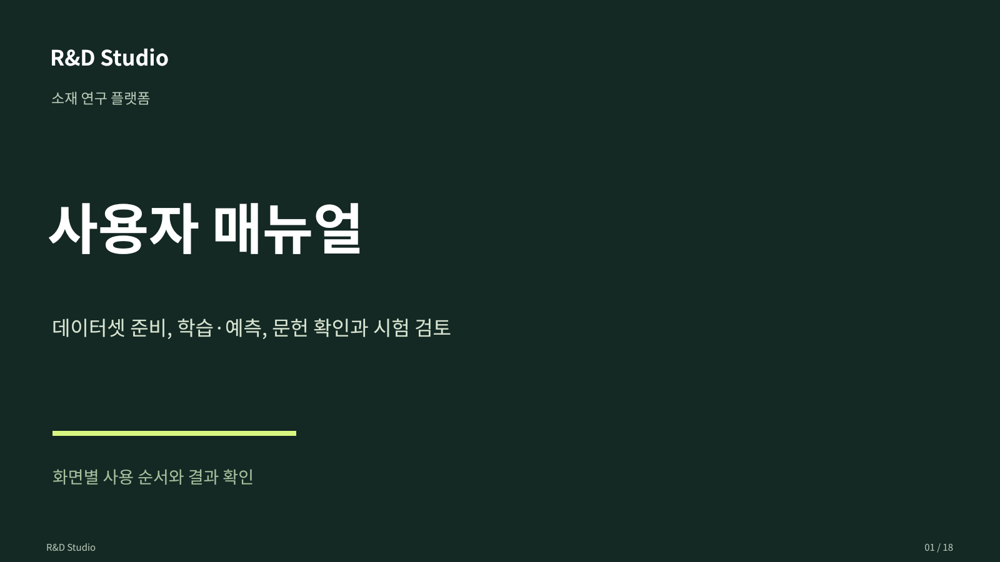

물성별 독립 학습
각 물성에 관측된 자료로 별도 모델을 학습합니다. 물성별 자료량과 특징을 살펴 기존 방식으로 분석을 시작할 수 있습니다.
샘플 입력
물성 A 모델물성 B 모델물성 C 모델
MATERIALS RESEARCH PLATFORM
데이터셋과 모델, 문헌 근거와 검토 이력을
하나의 연구 작업으로 연결합니다.
01 / RESEARCH WORKSPACE
작업마다 데이터셋과 학습 방식을 연결합니다.
다른 자료를 검토할 때도 현재 작업의 근거를
확인하며 연구를 이어갈 수 있습니다.
새 데이터셋은 새 작업에서 시작할 수 있습니다. 같은 작업에서 자료를 교체하면 이후 질문에 사용할 데이터의 범위를 구분합니다.
작업과 데이터셋 연결 알아보기 ↗02 / CORE CAPABILITIES
파일과 실험 DB에서 자료를 만들고,
물성별 결과와 문헌 근거를 검토한 뒤
시험평가 초안으로 연결합니다.
원재료 카테고리, 물성, 시험조건을 확인하고 데이터셋을 확정합니다. 파일 업로드와 저장된 자료의 재사용도 지원합니다.
03 / MODEL COMPARISON
같은 샘플의 여러 물성을 함께 다루되,
모델 선택은 물성별 검증 결과를 따릅니다.
각 물성에 관측된 자료로 별도 모델을 학습합니다. 물성별 자료량과 특징을 살펴 기존 방식으로 분석을 시작할 수 있습니다.
같은 샘플의 배합 입력에 여러 물성을 연결합니다. 독립 모델과 공동 모델을 같은 검증 조건에서 비교합니다.
미측정 물성은 결측으로 유지합니다. 예측 성능은 데이터 품질과 시험조건에 따라 달라지며, 평가자료에서 확인해야 합니다.
학습 방식과 결과 해석 ↗04 / REVIEW & TRIAL
원본 배합을 보존하고 변경 조성을 Revision으로 기록합니다. 검토자가 선정한 후보를 시험 계획과 작업지시서 초안으로 연결합니다.
검토와 시험 연계 가이드 ↗기준 배합과 모델 실행을 연결합니다.
투입량 변경과 사유를 기록합니다.
검토자가 후보와 목표 조건을 확인합니다.
자재·시험 마스터를 매핑하고 미리봅니다.
정식 시험 의뢰와 승인은 기존 시험평가 절차로 진행합니다. 연구·승인 기능은 조직의 설정과 권한에 따라 제공됩니다.
05 / OPERATING MODEL
데이터 연결, AI 공급자와 사용자 권한을
조직의 운영 환경에 맞춰 구성합니다.
06 / RESOURCES
소개용 브로셔와 화면별 매뉴얼을
편집 가능한 PowerPoint 파일로 제공합니다.
주요 기능과 연구 업무 흐름
PowerPoint 다운로드 ↗
데이터셋 준비부터 시험 초안 연결까지
PowerPoint 다운로드 ↗내 자료로 기능을 확인하기 전에 준비할 항목입니다.
0 / 5개 확인FAQ
파일에서 만든 데이터셋은 물성 예측 모델의 학습 입력으로 사용합니다. 파일 업로드만으로 대화용 LLM 자체를 재학습하지 않습니다.
현재 작업은 선택한 저장 데이터셋을 사용합니다. 최신 실험 자료를 반영하려면 다시 추출·저장한 데이터셋을 선택하고 학습을 실행합니다.
예측값은 실험 후보 검토를 위한 참고 결과입니다. 실제 시험 결과와 합격 판정은 실측 및 조직의 검토 절차로 확인합니다.
이 사이트는 상품 소개와 사용 가이드입니다. 화면은 구현 기능을 설명하기 위한 재구성이며 실제 데이터 처리·모델 실행은 설치한 연구 플랫폼에서 수행합니다.